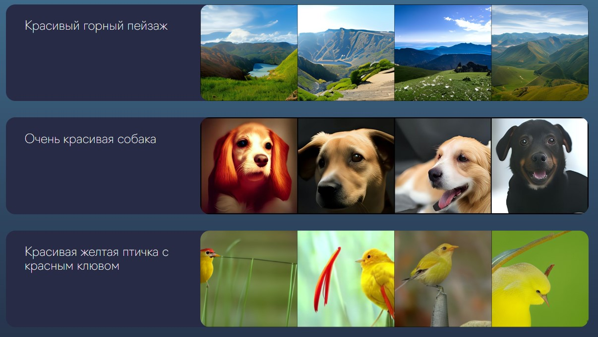
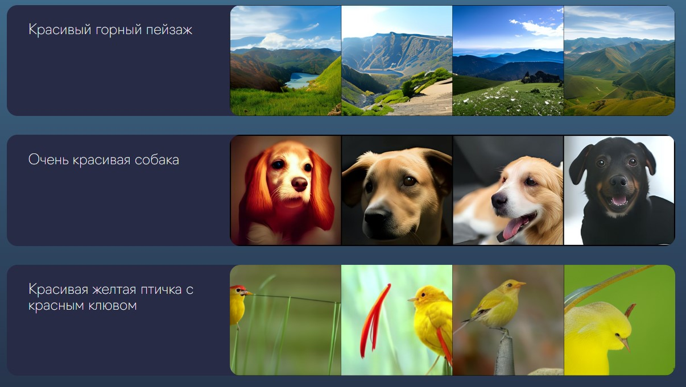

ruDALL-E

ru-DALL-E — это российский аналог популярной нейросети DALL-E 2, которая может генерировать изображения по текстовому описанию. Разработчиком отечественной модели стала компания Sber AI.
Сферы применения
- Другие статьи


ru-DALL-E — это российский аналог популярной нейросети DALL-E 2, которая может генерировать изображения по текстовому описанию. Разработчиком отечественной модели стала компания Sber AI.